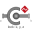
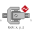

InstantaneousPower |
| Real |
Quantity: Power Unit: W |
|---|
|
Modelica.Mechanics.MultiBody.Joints.Constraints Prismatic cut-joint and translational directions may be constrained or released |
|
|
Modelica.Mechanics.MultiBody.Joints.Constraints Revolute cut-joint and translational directions may be constrained or released |
|
|  |
Modelica.Mechanics.MultiBody.Joints.Constraints Spherical cut joint and translational directions may be constrained or released |
|  |
Modelica.Mechanics.MultiBody.Joints.Constraints Universal cut-joint and translational directions may be constrained or released |